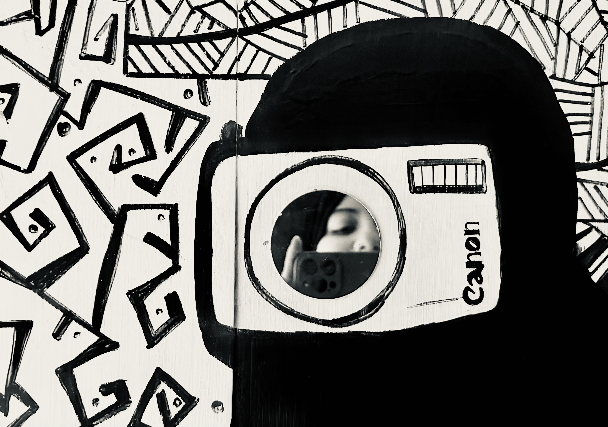

A little about me
I'm such a milllenial when it comes to photography!
It's been almost twenty years since I decided to buy a camera— and no longer after, it became my best pal. I started with an
Olympus FE-230, a 7.1 megapixels little thing (quite generous back then — not very much dazzling these days!).
It wasn't perfect — even by twenty-years-ago standards — but the simple fact that I could take it almost everywhere, photographing almost everything (with no worries about camera films), was mesmerising. liberating, indeed.
Then I found a slightly more advanced camera: the SONY DSC-H2 — a game changer! Most of the photos on this blog, were actually taken by that old friend!
Paul Éluard in of his poems says:
"I love you for all the women that I haven’t known,
I love you for all the times that I haven’t lived,
I love you to love,
I love you for all the women that I don't love.. "
I've never had any other cameras, so I suppose my version would be:
"I love you for all the pictures that I haven't captured!"